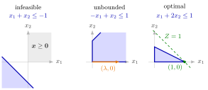

Possible Outcomes of a Linear Program¶
Proposition¶
Consider a linear program with variables, and let be the coefficient matrix of all its constraints, including the lower bounds on single variables such as (called domain definitions).
- The linear program has a corner point if and only if . For a linear program in standard form this always holds.
- If a linear program in standard form has a feasible solution, it has a feasible corner point.
- Every linear program is infeasible, unbounded, or has an optimal solution: a feasible linear program whose objective value is bounded has an optimal solution.
- According to its feasible region, a linear program has the following possible outcomes:
| Feasible region | Corner point | Optimal solutions |
|---|---|---|
| empty | none feasible | none: infeasible |
| unbounded | none | none (unbounded) or infinitely many |
| unbounded | at least one | none (unbounded), exactly one (a corner point) or infinitely many |
| bounded, nonempty | at least one | exactly one (a corner point) or infinitely many |
Interpretation¶
Before solving a linear program it helps to know how it can end. There are exactly three ways: no feasible point, feasible points whose objective improves without limit, or an optimal solution. Unlike a general convex problem, a linear program has no fourth case of a bounded objective whose best value is never attained.

The figure shows one instance of each outcome, each maximizing subject to and one constraint. Left: Example 2 with , , so the constraint is ; its halfplane does not meet the quadrant , and the linear program is infeasible. Middle: Example 1 with , , so ; the points , , are feasible with , and the linear program is unbounded. Right: Example 1 with , , so ; the region is the triangle with corners , , , and the level line touches it only at the corner , the unique optimal solution, with value .
A corner point needs linearly independent binding constraints, so the constraint normals must span : . If the rank is smaller, some has , and with every feasible point the whole line in direction is feasible. Along it the objective is constant or unbounded, so without corner points a linear program never has exactly one optimum (Example 3). Conversely, a feasible linear program in standard form has a feasible corner point: from a feasible point with fewer than independent binding constraints, move in a direction that keeps them binding and lowers some positive , until a new constraint binds, at the latest ; repeat.
The counts follow. The optimal solutions form a convex set, as in every convex optimization problem, so two optima bring the whole segment between them: never exactly two. When there is a feasible corner point, corner point optimality puts an optimum at a corner, so a unique optimum is that corner. A nonempty bounded region is compact, so an optimum always exists there (see optima at extreme points); an unbounded region allows every outcome.
These are the cases met in OR Modelling as infeasible and unbounded linear programs and multiple optimal solutions; a common confusion is to call a linear program unbounded because its feasible region is. Part 3 of the proposition is proved with the simplex algorithm, using Bland's rule to avoid cycling.
Key Results¶
- A linear program has at least one corner point if and only if the matrix of all constraints, including the domain definitions, has rank ; in standard form the domain definitions guarantee this.
- If a linear program in standard form has a feasible solution, it also has a feasible corner point.
- Every linear program is infeasible, unbounded, or has an optimal solution; for a feasible linear program in standard form this follows from the simplex algorithm with Bland's rule.
- An unbounded feasible region without a corner point allows no or infinitely many optimal solutions; with a corner point also exactly one; a bounded feasible region with a corner point allows exactly one or infinitely many, and a unique optimal solution is attained at a corner point.
- The set of optimal solutions is convex, so a linear program has no, exactly one or infinitely many optimal solutions.
Examples¶
1. One constraint, two parameters. Maximize subject to , . The linear program is feasible for all , since gives , so it is never infeasible. It is unbounded if and only if or : for the points , , are feasible with , and similarly for . If , then and , the region is the triangle with corners , , , and the optimal value is : attained at one corner if , on the whole edge between and if .
2. Infeasibility appears. Maximize subject to , . If and , the left-hand side is for every , so the linear program is infeasible. Otherwise it is feasible: for take ; for , take . It is unbounded if and only if , or and : then from a feasible point one can increase without limit, since does not increase. If and , the region is the triangle with corners , , , and the optimal value is , attained on a whole edge if and ; for the region is the single point .
3. No corner point. Maximize subject to with . Here has rank , so there is no corner point, and the optimal value is attained on the whole line : infinitely many optimal solutions. With the objective instead, the feasible points give , and the linear program is unbounded. Written in standard form with , the first linear program gets corner points, for instance , which is optimal and corresponds to .
4. An optimal solution that is not a corner point. "An optimal solution is a feasible corner point" fails whenever there are infinitely many optimal solutions. For example, on the quadrilateral the objective is maximal on the segment from to , and its midpoint is optimal without being a corner point; in Example 3 above no optimal solution is a corner point at all.
Prerequisites¶
- Standard Form of a Linear Program
- Corner Point
- Rank
- Infeasible Linear Program
- Unbounded Linear Program
- Optima at Extreme Points
Related Concepts¶
- Multiple Optimal Solutions
- Adjacent Corner Points
- Nonoptimal and Optimal Corner Points
- Weak Duality
- Possible Outcomes of a Primal–Dual Pair
- Bland's Rule
Sources¶
- Math VI: Convexity and Optimization · Week 4
- H. E. Nusse and M. Dienstknecht, Math VI: Convexity and Optimization, lecture notes 2026–2027, Section 4.2
Aliases: outcomes of an LP, infeasible, unbounded or optimal, existence of an optimal solution of an LP, existence of a feasible corner point Keywords: \operatorname{rank}(\tilde{\boldsymbol{A}})=n, every linear program is infeasible, unbounded or has an optimal solution, feasible linear program in standard form has a feasible corner point, no, exactly one or infinitely many optimal solutions, bounded and unbounded feasible region Symbols: element of, lambda, real numbers
Last updated: 5 November 2026 12:47
Possible Outcomes of a Linear ProgramPossible Outcomes of a Primal–Dual PairStrong DualityStandard Form of a Linear ProgramCorner PointRankInfeasible Linear ProgramUnbounded Linear ProgramOptima at Extreme PointsMultiple Optimal SolutionsAdjacent Corner PointsNonoptimal and Optimal Corner PointsWeak DualityBland's Rule